Maga
/
Asesina
Dificultad Moderada
HABILIDADES


PASIVA • LADRONA DE ESENCIAS
Ahri obtiene una acumulación de Ladrona de Esencias al impactar a un objetivo con un hechizo. Cuando tiene suficientes acumulaciones, el siguiente hechizo que impacte a un enemigo también la curará.
1 • ORBE DEL ENGAÑO
Ahri lanza y recupera su orbe, lo que inflige daño mágico de ida y daño verdadero de vuelta.
2 • FUEGO ZORRUNO
Ahri obtiene un breve aumento de velocidad de movimiento y lanza tres fuegos zorrunos que siguen a enemigos cercanos para atacarlos.
3 • ENCANTO
Ahri lanza un beso que inflige daño y deja encantado al enemigo, lo que detiene de inmediato las habilidades de movimiento del objetivo y hace que avance hacia ella de manera inofensiva. El objetivo recibe daño aumentado de Ahri temporalmente.
DEFINITIVA • IMPULSO ESPIRITUAL
Ahri se desplaza hacia adelante y dispara rayos de esencia, lo que inflige daño a los enemigos cercanos. Puedes lanzar Impulso Espiritual hasta tres veces antes de que entre en enfriamiento.
CONFIGURACIÓN
OBJETOS
-
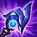
Eco de Luden
3000+85 Poder de Habilidad
+300 Maná Máximo
+20 Aceleración de Habilidad
ECHO DE LA DISCORDIA: Moverte y lanzar habilidades acumula Discordia. Con 100 de Discordia, tu siguiente habilidad de daño o ataque potenciado infligirá 100 de daño mágico adicional (+10% AP) a tu objetivo y hasta a 3 enemigos cercanos.
-
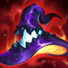
Sombrero Mortífero de Rabadon
3500+120 Poder de Habilidad
DAÑO EXCESIVO: Aumenta el Poder de Habilidad en un 40%.
-
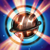
Orbe del Infinito
3150+200 Vida Máxima
+60 Poder de Habilidad
DESTINO: +5% de Velocidad de Movimiento.
BALANCE: +15% de Penetración de Magia.
MUERTE INEVITABLE: Las habilidades y los ataques potenciados infligen golpes críticos con un 20% de daño adicional contra enemigos por debajo del 35% de Vida. -
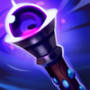
Báculo del Vacío
2800+70 Poder de Habilidad
DISOLVER: +40% de Penetración de Magia.
-
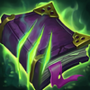
Morellonomicón
3000+300 Vida Máxima
+70 Poder de Habilidad
PREDICADOR DEL FIN: +15 de Penetración de Magia.
AFLICCIÓN: Infligir daño mágico aplica un 40% de Heridas Graves a campeones enemigos por 3 seg. Si el objetivo está por debajo del 50% de Vida, este efecto aumenta a un 60% de Heridas Graves.
Heridas Graves reduce la efectividad de las curaciones y efectos regenerativos. -
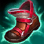
Botas Jonias de la Lucidez
1000CALZADO: +40 de Velocidad de Movimiento.
LUCIDEZ: +15 de Aceleración de Habilidad.
INVOCADO: Reduce los enfriamientos de hechizos un 15%.
CARRERA (ACTIVA): Aumenta la Velocidad de Movimiento un 15% durante 3 seg. Infligir o recibir daño de campeones desactiva los efectos de Carrera. (60 seg de enfriamiento). -
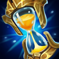
Encantamiento de Estasis
800ESTASIS (ACTIVA): Te vuelves invulnerable e inalcanzable durante 2.5 seg, pero no puedes moverte, atacar, lanzar habilidades ni utilizar objetos. (120 seg de enfriamiento).
RUNAS Y HECHIZOS
-
Electrocutar
Alcanzar a un campeón con 3 ataques o habilidades separados dentro de 3 seg inflige daño adaptable adicional.
DAÑO: 30-184 (basado en nivel) (+40% adicional AD) (+25% AP).
ENFRIAMIENTO: 25 seg. -
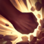
Brutalidad
Obtienes 7 de Daño de Ataque y un 2% de Penetración de Armadura o 14 de Poder de Habilidad y un 2% de Penetración de Magia (adaptable).
-
Segundo Aire
Gana 5 de Vida cada 5 seg.
Después de recibir daño de un campeón enemigo, regenera 3(+1.5% de tu Vida faltante) a lo largo de los próximos 10 seg. Este efecto se duplica para campeones cuerpo a cuerpo. -
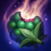
Dulces Frutos
Aumenta la curación de Frutamiel en un 25%. Cada vez que tú o un aliado cercano coma una Frutamiel, obtienes 20 de oro.
-
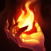
Ignición
ENFRIAMIENTO: 90 seg.
Prende fuego al campeón enemigo objetivo, lo que inflige 60 de daño verdadero (60-410 basado en nivel) durante 5 seg y le aplica un 60% de Heridas Graves mientras dure el efecto. -
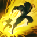
Destello
ENFRIAMIENTO: 150 seg.
Te teletransportas una distancia corta hacia delante o hacia la dirección objetivo.
CÓMO JUGAR AHRI
Ahri es una maga asesina. Es una campeona del carril central que usa sus habilidades para controlar a las multitudes, despejar las olas y hacer estallar a los enemigos. ¡Ahri sobresale en daño a un solo objetivo con su encantamiento (tercera habilidad) y usa otras habilidades para infligir mucho daño! Cuando juegas con Ahri, es mejor jugar seguro antes de que alcance el nivel 5, una vez que alcance el nivel 5 y obtenga su habilidad definitiva, podrá correr en cualquier dirección para entrar o salir de las peleas en equipo, esto le da mucha movilidad y la convierte en una campeona muy segura para jugar.